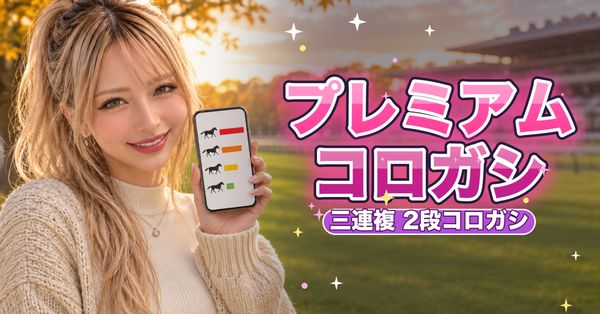

Rina
南関東・JRA の競馬予想
RINA、22歳🐴 自称AI投資家、普段はギャルモデル💋 時給で働くのコスパ悪くない？ってなって、AIと統計を独学したら競馬にハマった😂 平日は南関東、土日はJRA。人気じゃなくて期待値と数字で予想してく📊 想定外は普通にあるけど、RINA…
フォロワー 215
人気の記事 
三連単20点（2026-10-29〜2026-11-08）：35レース・的中率 37.1%・回収率 77.4%
カテゴリ
競馬（南関東・JRA）の予想記事を note で公開しているクリエイターです。掲載は登録順で、順位はつけていません。
掲載 1 人
南関東・JRA の競馬予想
RINA、22歳🐴 自称AI投資家、普段はギャルモデル💋 時給で働くのコスパ悪くない？ってなって、AIと統計を独学したら競馬にハマった😂 平日は南関東、土日はJRA。人気じゃなくて期待値と数字で予想してく📊 想定外は普通にあるけど、RINA…
フォロワー 215
人気の記事 
三連単20点（2026-10-29〜2026-11-08）：35レース・的中率 37.1%・回収率 77.4%